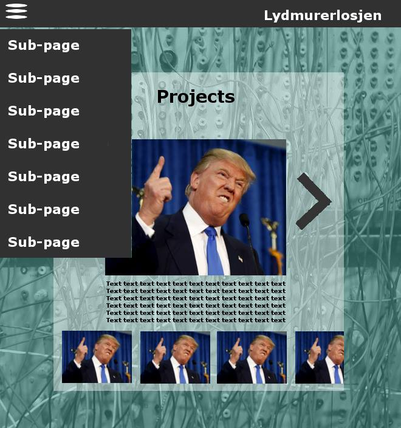

Navigation Structure
The site's navigation structure will be based on a clique structure.
One will be able to move from anywhere on the site anywhere else, using the
rollover menu that contains the navbar. The site will, however, function
inside just one html-file that you also can scroll around in. This is because
the site does not contain too much information, comes across more as a whole
presentation and "space" for Lydmurerlosjen, and was wanted by the client.

Content
All the content will be in one single html-document, though
each part can be navigated to through a slide-out sidebar.
About
This section describes what Lydmurerlosjen's purpose is, and who is
part of the board, possibly with pictures of them and a description
of what part of the union they are responsible for, and all of their
email addresses. There will also be a section describing our funding
partners like SiT.
Events
This section describes upcoming events that Lydmurerlosjen will be
hosting and how you can participate in these events.
Here we will feature both a JavaScript Google calendar
containing the events Lydmurerlosjen hosts and a list ver-
sion of the same calendar. We will also include, if possible, an option
for the user to add the calendar to her own Google calendar.
Projects

Here lies a presentation showcasing the work of
present and former students, represented with images. When you
hover over the images they will highlight and their size
will increase within the box. When you click
the image it will increase in size and cover most of the screen.
Underneath there will be some text and embedding of media
examples and/or link to a home page/facebook page.
When you click a different icon a new pop-up
page replaces the former.
Contact
This section will have an interactive Google map, a telephone number,
email address and any other useful info to get in touch with the union.
There will also be an overview of the board members in
Lydmurerlosjen with a picture to the left, head liners
with their position and some information about their
roles and their email adresses.